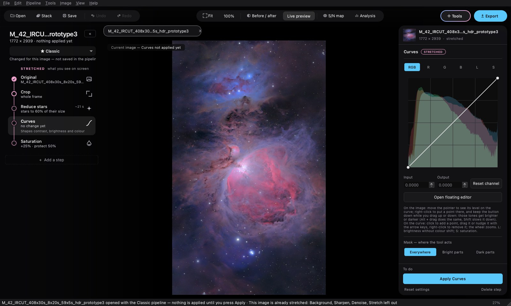

Documentation
Getting started
From a file or a folder of sub-exposures to the export, in five steps. No step is applied before Apply.

01 Install
Download the installer for your system from the Download section. On macOS, open the disk image and drag COSMO to Applications. On Windows, run the installer. The first launch needs one extra click, explained there: the application is not signed.
The classic tools work on their own. The sky background can go through GraXpert if it is installed. The RC-Astro engines are used if you own their licences; COSMO runs them from your own installation.
02 Open an image, or stack
Open opens a FITS, TIFF, PNG or JPEG file. Stack starts from a folder of sub-exposures: COSMO analyses them, you choose which to keep, then it stacks them.
A linear image looks black: COSMO brightens it on screen so that you can see it, without touching its data.
03 Follow the sequence
On the left, the steps of the Classic pipeline are already in place, linked by a thread. In blue, those that work on the linear image; in pink, those that come after the stretch.
- Crop removes the edges of the stack.
- Background removes the gradients, then Sharpen and Denoise refine and clean.
- Stretch makes the image visible: GHS, arcsinh or histogram.
- Curves, Saturation and the others set contrast and colour.
For each step: set it, look with Preview, keep with Apply. The node of the step fills in once it is applied.
04 Add a tool
The Tools button, top right, opens every tool in processing order. Point at one: it says what it does and when to use it. One click adds it after the selected step; it can also be dragged between two steps.

With Separate stars, the stars become a layer of their own. Work on the nebula and on the stars separately, then Recombine brings them together.
A step that has been applied can no longer be edited. Go back to this step returns the image to just before it: the following steps are then to be redone, with their settings.
05 Export
Export writes the image as it is. 32-bit FITS is for further processing, 16-bit TIFF keeps full precision, PNG and JPEG are for sharing. TIFF, PNG and JPEG carry the sRGB profile.
Your recipe is kept in a .cosmopipe pipeline, to replay on another image. A .cosmo project keeps the open images and their steps; the original files must stay where they are.